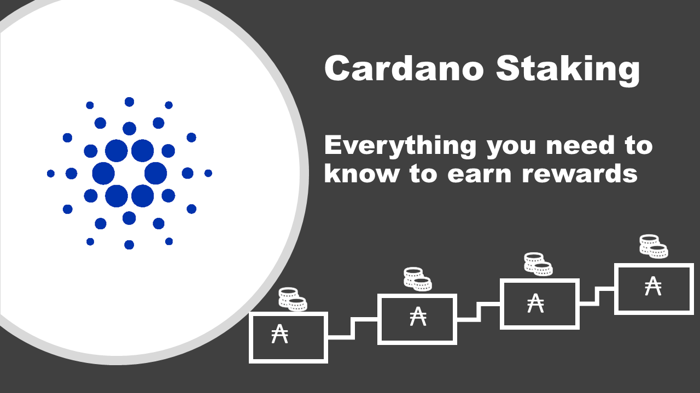

Acerca de Cardano Staking?
- Si stakeas tu ADA, está ayudando a respaldar la red y, por hacerlo, ganas recompensas.
- Stakear Cardano no bloquea tu ADA, por lo que puedes moverlo cuando quieras libremente. Cuando stakeas, sos la única persona que puede acceder y mover tus adas, por lo que la seguridad de tu ADA está 100% en tus manos.
- Puedes incrementar o disminuir el monto en tu billetera delegada, y tus recompensas aumentaran o disminuiran proporcionalmente de manera automatica.
- Puedes stakear cualquier cantidad superior a 10 ADA.
- La tasa de devolución variará según el pool en el que se encuentres, pero en general, la mayoría de los pooles proprocionan entre el 5% y el 6% APY al año.
- Obtendrá sus primeras recompensas después de 15 a 20 días y luego cada 5 días una vez que su pool esté produciendo bloques.
- Cuando agregues nuevos fondos a una billetera, tendrá que esperar los mismos 15 a 20 días para obtener sus primeras recompensas por las ADAs adicionales y luego será cada 5 días. Mientras esperas, seguirás recibiendo recompensas sobre su saldo original.
- Al stakear, se paga un gasto de transacción (aproximadamente 0,17 ADA) para crear y confirmar su clave de staking. También hay un depósito de 2 ADA que recuperas cuando dejas de stakear.
- Stakear ADA significa simplemente firmar transacciones, por lo que incluso si el pool es pirateado o desaparece, sus fondos aún están seguros y puede volver a delegar a otro pool.
- Puedes cambiar el pool en cualquier momento, por lo general, se cambia el pool uando se está saturando con demasiada ADA delegada a ese pool, por lo que las recompensas comenzarán a disminuir, por eso es importante verificar las estadísticas del pool cada época o si usted simplemente quiere apoyar a otro operador de pool.